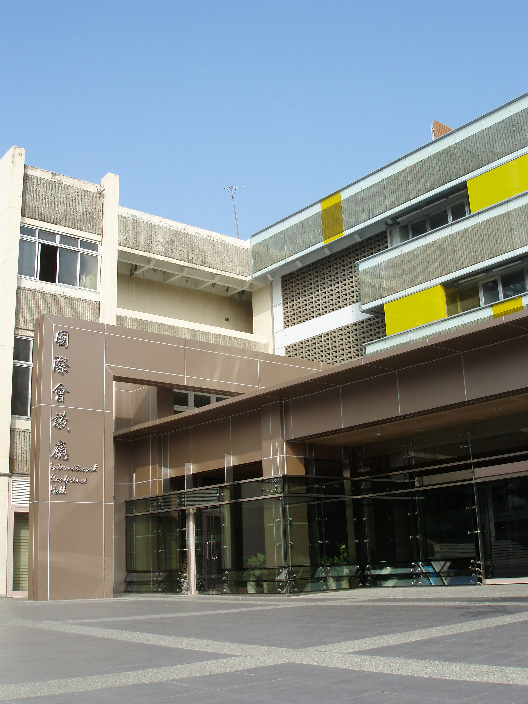

Venue
International Conference Hall, National Cheng Kung University
No. 1, University Rd., East District, Tainan City 701
|
(A) Driving Directions
Take National Freeway No.1 (Sun Yat-Sen Freeway) southbound to NCKU main campus through Dawan Interchange：From the North Take National Freeway No.1 (Sun Yat-Sen Freeway) northbound to NCKU main campus through Rende Interchange：From the South
(B) By Taiwan Railway (TRA)
Tainan Train Station – NCKU main campus： Google map direction :
(C) By Taiwan High Speed Rail (THSR)
THSR Tainan station – TRA Tainan station – NCKU main campus：Google map direction (THSR-TRA)、Google map direction (TRA – NCKU)
|
 |